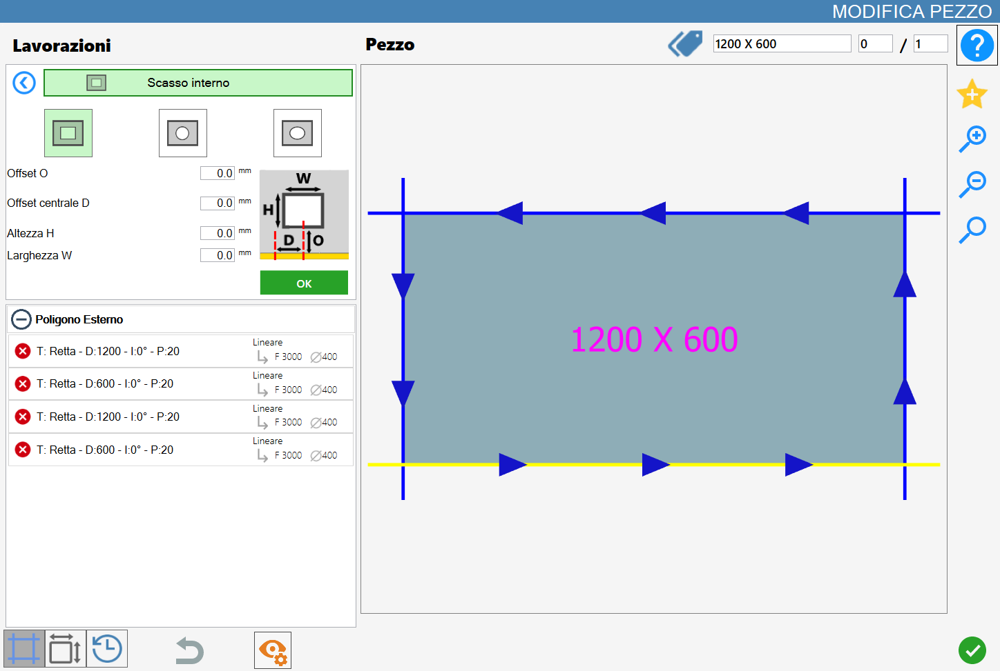
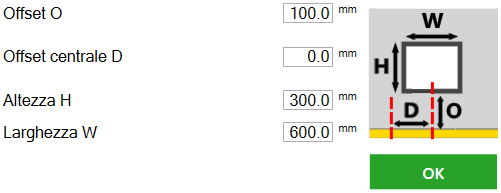
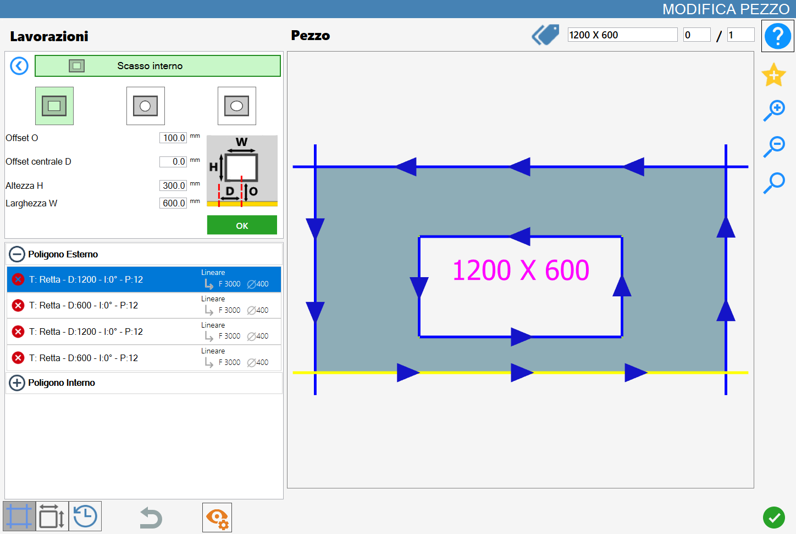
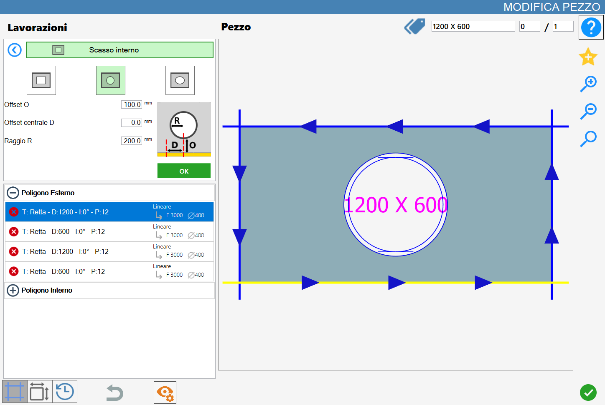
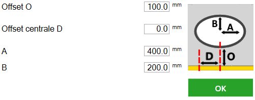

La funzione ‘Scasso Interno’ permette di aggiungere al pezzo uno scasso interno di forma rettangolare, circolare o ellittica.
L’interfaccia per questa funzione assomiglia alla seguente immagine:

Tipologie di lavorazione
Per utilizzare questa lavorazione, occorre innanzitutto scegliere una delle due modalità disponibili, selezionando il pulsante corrispondente:
Le modalità ‘Rettangolare’, 'Circolare’ e 'Ellittica' sono mutuamente esclusive: l'attivazione di una esclude automaticamente l'altra.
Scasso rettangolare | |
 | Scasso circolare |
 | Scasso ellittico |
Scasso Rettangolare
Quando questa modalità è attivata, l’anteprima dello scasso rettangolare viene visualizzata direttamente nell’anteprima della lavorazione, evidenziata in verde chiaro. Le dimensioni e il posizionamento dello scasso dipendono dai parametri predefiniti, che possono essere modificati dall’utente.

Parametri scasso rettangolare
Mentre ci si trova in questa modalità verrà mostrato il seguente pannello parametri:

Offset O | Distanza tra il bordo dello scasso e il lato di riferimento del pezzo selezionato. |
Offset centrale D | Distanza tra il lato del pezzo parallelo a quello selezionato e il centro dello scasso. |
Altezza H | Altezza dello scasso. |
Larghezza W | Larghezza dello scasso. |
Esecuzione di scasso rettangolare
È possibile applicare la lavorazione premendo il pulsante a sinistra del taglio opportuno nella lista dei poligoni.
Un’icona rossa con una 'X' indica che la lavorazione non può essere applicata al taglio desiderato.
La conferma della lavorazione aggiunge un nuovo poligono interno al pezzo sia a livello grafico, sia nella lista dei poligoni sul lato sinistro:

Scasso Circolare
Quando questa modalità è attivata, l’anteprima dello scasso circolare viene visualizzata direttamente nell’anteprima della lavorazione, evidenziata in verde chiaro. Le dimensioni e il posizionamento dello scasso dipendono dai parametri predefiniti, che possono essere modificati dall’utente.

Parametri scasso circolare
Mentre ci si trova in questa modalità verrà mostrato il seguente pannello parametri:

Offset O | Distanza tra il bordo dello scasso e il lato di riferimento del pezzo selezionato. |
Offset centrale D | Distanza tra il lato del pezzo parallelo a quello selezionato e il centro dello scasso. |
Raggio R | Misura del raggio dello scasso. |
Esecuzione di scasso circolare
È possibile applicare la lavorazione premendo il pulsante a sinistra del taglio opportuno nella lista dei poligoni.
Un’icona rossa con una 'X' indica che la lavorazione non può essere applicata al taglio desiderato.
La conferma della lavorazione aggiunge un nuovo poligono interno al pezzo sia a livello grafico, sia nella lista dei poligoni sul lato sinistro:

Scasso Ellittico
Quando questa modalità è attivata, l’anteprima dello scasso ellittico viene visualizzata direttamente nell’anteprima della lavorazione, evidenziata in verde chiaro. Le dimensioni e il posizionamento dello scasso dipendono dai parametri predefiniti, che possono essere modificati dall’utente.

Parametri scasso ellittico
Mentre ci si trova in questa modalità verrà mostrato il seguente pannello parametri:

Offset O | Distanza tra il bordo dello scasso e il lato di riferimento del pezzo selezionato. |
Offset centrale D | Distanza tra il lato del pezzo parallelo a quello selezionato e il centro dello scasso. |
A | Valore corrispondente al semiasse maggiore dello scasso ellittico. |
B | Valore corrispondente al semiasse minore dello scasso ellittico. |
Esecuzione scasso ellittico
È possibile applicare la lavorazione premendo il pulsante a sinistra del taglio opportuno nella lista dei poligoni.
Un’icona rossa con una 'X' indica che la lavorazione non può essere applicata al taglio desiderato.
La conferma della lavorazione aggiunge un nuovo poligono interno al pezzo sia a livello grafico, sia nella lista dei poligoni sul lato sinistro: